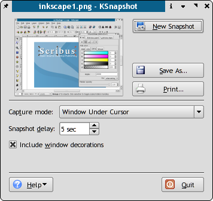

Following the *nix mentality of one tool for the job, Ksnapshot does one thing really really well: Take screen captures. Even in preferences to the GIMP, which has a good screen capture feature. Ksnapshot is fast and generates perfect screen captures with a default export of 32bit PNG, the best format in my opinion for screen shots. Never, ever use Jpeg for screen shots which you intend to use for print. Probably 95% of the Scribus screen shots I've ever made for both web and print are done with Ksnapshot. As I mentioned, there are others, this is just my choice and it works TM.
|  |